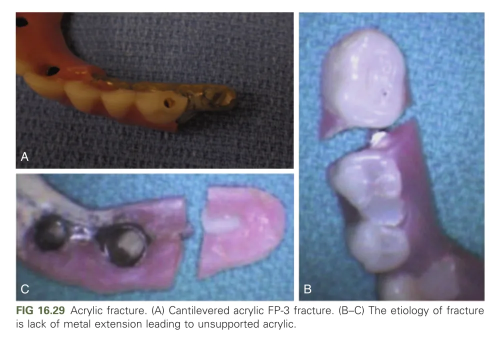
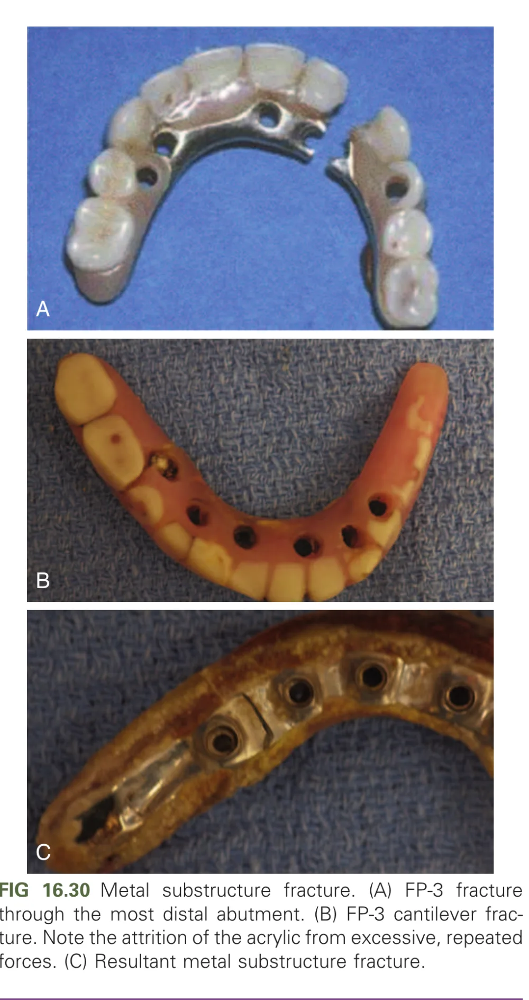

نسخه استخراجشده؛ ترجمه یا تأیید علمی انجام نشده است. وضعیت: captured
بیا با یک رتبهبندی شروع کنیم: «دومین عارضهی شایع برای پروتزهای ثابت روی دندان طبیعی، شکست پرسلن است.»
و چرا روی ایمپلنت وضع بدتر است:
«شکست مادهی اکلوزال در ایمپلنتها شایعتر از دندانهای طبیعی است، بهدلیل نبود تسکین تنش پریودنتال در ایمپلنتها و نیروی ضربهای بالاتر حاصل بر مادهی اکلوزال.»
این همان مفهومی است که در سراسر مسیر بارها دیدهای، این بار در سطح ماده: لیگامان پریودنتال یک ضربهگیر است. دندان زیر ضربه اندکی فرو میرود و اوج نیرو را پخش میکند؛ ایمپلنت نمیرود. پس همان لقمه، روی ایمپلنت ضربهی تیزتری به پرسلن میزند.
و دامنهی شیوع، که چشمگیر است:
در یک تحلیل گذشتهنگر، شکست پرسلن در تاجهای متالسرامیک و پروتزهای پارسیل ثابتِ متکی بر ایمپلنت، از ۰ تا ۵۳ درصد بیماران متغیر بود — و مستقیماً به عوامل نیرو مربوط بود.
دامنهی ۰ تا ۵۳ درصد را جدی بگیر: این یعنی در جمعیتهای با عوامل نیروی پایین تقریباً هیچ شکستی رخ نمیدهد، و در جمعیتهای پرنیرو بیش از نیمی از بیماران دچار میشوند. شکست ماده به همان اندازه که به ماده بستگی دارد، به نیروهای بیمار وابسته است.
و اکنون اعداد استحکام مواد — که ترتیب انتخاب را میسازند:
و شرایطی که شکست را راه میاندازند: «شکست پرسلن، آکریلیک و کامپوزیت ممکن است زیر بارهای بیش از حد رخ دهد — یا حتی با باری کمتر که مدت، زاویه یا فرکانس بیشتری دارد.» — دوباره همان منحنی خستگی.
و یک تفاوت ماهوی میان آکریلیک و پرسلن که طراحی فریمورک را تعیین میکند:
«برخلاف پرسلن، آکریلیک استحکامش را از حجم میگیرد. گیر مکانیکی باید در سوپراستراکچر فلزی گنجانده شود، با مقاومت مناسب در برابر نیروهای اکلوژن.»
و چرا رویههای آکریلیک یا کامپوزیت خلفی اغلب میشکنند؟ «بهدلیل حجم ناکافی و استحکام تسلیم و خستگی ناکافی در مقایسه با نیروی گازی که زیر پارافانکشن یا روی کانتیلورها ایجاد میشود.»
و یک مقایسهی روشنگر: «شکست آکریلیک عارضهای بسیار شایعتر برای بازسازیهای ثابت تا پروتزهای متحرک است. دندانهای آکریلیک دنچرهای سنتی، نیروهایی را که در ترمیمهای ایمپلنتساپورتد ایجاد میشود تحمل نمیکنند.» — همان ماده، در دو محیط نیرویی متفاوت، دو سرنوشت متفاوت.
و اتیولوژی شکست آکریلیک در شکل ۱۶٫۲۹ روشن است: «نبود امتداد فلز که به آکریلیک بدون تکیهگاه میانجامد.» — یعنی مقصر معمولاً آکریلیک نیست؛ فریمورکی است که زیرش تمام شده.

زیرکونیا مونولیتیک «یک مادهی ترمیمی نسبتاً تازه با ویژگیهای مکانیکی استثنایی در مقایسه با سرامیکهای موجود امروز» است.
و اعدادش:
و مسئلهای که حل کرد: «زیرکونیا مونولیتیک بسیاری از مشکلات چیپینگ مرتبط با سرامیکهای ونیر روی زیرکونیا را حل کرده است.» — یعنی مشکل اصلی در خودِ زیرکونیا نبود؛ در لایهی سرامیکی روی آن بود. با حذف آن لایه، بخش بزرگی از مسئله حذف شد.
و نرخ عارضهی گزارششده: برای پروتزهای ثابت، ۳ تا ۳۶ درصد پس از ۱ تا ۵ سال.
و شکل ۱۶٫۳۲ همین تقابل را نشان میدهد: ونیر زیرکونیا با عارضهی شایع چیپینگ و شکست، در برابر زیرکونیا مونولیتیک که «برتر از سایر مواد ترمیمی ایمپلنت» نشان داده شده، چون مقاومت شکست بالا و استحکام خمشی استثنایی دارد.
و اکنون یکی از تیزترین دادههای کل این ماژول — سمانی در برابر پیچشونده:
«کاهش شیوع شکست پرسلن یا آکریلیک پروتز در ترمیمهای سمانی در مقایسه با پروتزهای پیچشونده مشاهده شده است.»
و سازوکارش دو بخش دارد: «سوراخ پیچ ممکن است تمرکز تنش را بر مادهی ترمیمی افزایش دهد و بیشتر به پرسلن بدون تکیهگاه میانجامد.» — یعنی سوراخ دسترسی هم یک تمرکزکنندهی تنش است و هم بخشی از ساپورت زیر پرسلن را برمیدارد.
و مطالعهای که طراحیاش آن را قوی میکند:
یک ارزیابی split-mouth برای نواحی بیدندان دوطرفه در بیماران پارسیل. نتیجه: شکست سرامیک ۳۸ درصد برای پیچشونده در برابر ۴ درصد برای سمانی. میانگین دورهی بارگذاری: ۵ سال.
چرا طراحی split-mouth مهم است؟ چون هر دو نوع ترمیم در دهان یک بیمار بودند — پس عوامل نیرو، پارافانکشن، بهداشت و رژیم غذایی همه یکساناند. تفاوت ۳۸ به ۴ را نمیتوان به تفاوت بیماران نسبت داد. این یکی از تمیزترین مقایسههای این ماژول است.
و شکست فریمورک فلزی (شکل ۱۶٫۳۰) سه سناریو را نشان میدهد: شکست FP-3 از میان دیستالترین اباتمنت، شکست کانتیلور FP-3 با ساییدگی آکریلیک از نیروهای بیش از حد و مکرر، و شکست حاصل سوپراستراکچر فلزی.
به سناریوی دوم دقت کن: ساییدگی آکریلیک کنار شکست کانتیلور، نشانهی همان نیروهای بیش از حد و مکرر است. ساییدگی آکریلیک را باید هشدار خواند — نشانهای که نیروها بیش از حد و مکررند، و اگر آن را بخوانی، هنوز پیش از شکست فریمورک فرصت مداخله داری.
